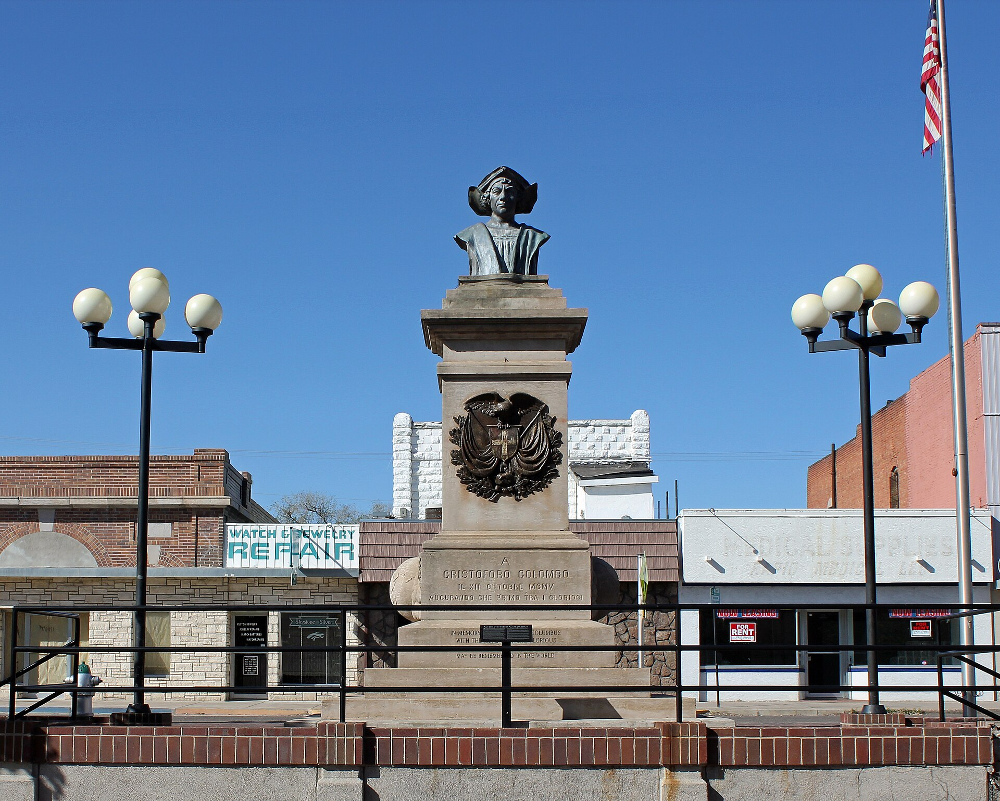

Pueblo, Colorado
Pueblo Christopher Columbus Monument
The monument in the East Abriendo Avenue median, photographed April 22, 2012, by Jeffrey Beall, CC BY-SA 3.0.

Still standing. The Pueblo Christopher Columbus Monument has not been removed, covered, or moved. It remains in the median of the 100 block of East Abriendo Avenue at Mesa Junction, across from the Rawlings Library at 100 East Abriendo Avenue, Pueblo, Colorado 81004.
On October 13, 2025, the Order of Sons of Italy held a morning ceremony at the statue for the 120th anniversary of the dedication, and Indigenous activists marched from Hinkle Park to the same spot. On October 14, 2024, KOAA reported live from the statue and said it still stands in front of the library. On October 12, 2026, the Pueblo Chieftain reported another celebration and another protest at the monument in Mesa Junction.
The monument is a granite pillar and a bronze bust, unveiled on October 12, 1905. The National Register form measures the whole work at 18 feet 6 inches. Pietro Piai modeled the bust in New York in 1904. Italian-American societies raised it as a mark of immigrant standing in a steel town. Since the late twentieth century, Indigenous protesters have used the same median to call Columbus a figure of conquest and to ask that the bust leave the street. City Council has not voted to take it down.
See it from the sidewalk100 block, East Abriendo AvenueMedian at Mesa Junction, Pueblo, CO 81004. Busy traffic. Cross at the corner.- Place
- Median, 100 block of East Abriendo Avenue, Mesa Junction. Across the street: Rawlings Library, 100 East Abriendo Avenue. Pin 38.25951, -104.62000.
- Status
- In place. Not removed, not covered, not relocated. Public gatherings were held at the statue in October 2025 and October 2026.
- Height
- 18 feet 6 inches overall. Bronze bust 5 feet, inscribed Pietro Piai, Scultore, New York 1904.
- Makers
- Pietro Piai, bust. J.A. Byrne, pillar. Michele Albo, foundation. Markert and Genest, contractors.
- Visit
- Outdoor, no ticket, in a street median. Use the crosswalk. Do not climb the pedestal or the railing.
What you are looking at
The monument faces northeast from the median. A concrete pad carries three rough, light-red granite steps. Above them a granite pillar holds carved hemispheres, one to the northwest and one to the southeast, and a cast-iron crest: an eagle grasping a cross medallion, two hands shaking, drapery, and a wreath. A short hook on the stone was made for a wreath on Columbus Day. The bronze bust at the top shows Columbus in fifteenth-century Italian dress and a hat.
The Italian lines sit at eye level. The English lines were added later, beneath them, and they show up in photographs by 1976. They did not replace the Italian. The front English reads: In memory of Christopher Columbus, with the hope that the glorious date of October 12, 1492, may be remembered in the world. The rear English reads: Under the auspices of the Columbian Federation, this monument was erected on October 12, 1905, by the Italians of America. Pietro Piai's name is at the upper left of the inscribed step. Genest and Markert are at the upper right. An executive committee is cut into the back of the pillar base, with H. Chiariglione as president.
By 2011, when the monument was nominated to the National Register as site 5PE.3162, the setting had been rebuilt for access. A single stone stair on the northeast had become a brick wall with stairs on either side. The old cast-iron fence around the bust was gone, and a newer metal rail stood at the top of the wall. The grass had been leveled and bricked. The bust, pillar, and inscriptions were described as unchanged since 1905. The 2012 photograph on this page shows that brick approach and that rail.
Construction was finished by October 1, 1905. Lena Chiariglione pulled the ropes on October 12, and a crowd the Chieftain put at about 7,500 watched the canvas come off.
1905, and the people who paid for it
Italians had been in Pueblo since the late 1860s, at the meeting of the Arkansas and Fountain Creek. The Denver and Rio Grande reached town in 1872. Within a decade the Colorado Coal and Iron works made Pueblo a mill city. Southern Italians, many of them Sicilian, came from cane fields near New Orleans and from railroad work in New York and Philadelphia, and from the coal camps around Canon City and Trinidad. The first large Italian neighborhood in Pueblo was Goat Hill, near East First Street and today's Interstate 25, close to a smelter. Later many families moved south into Bessemer, nearer the mill.
The monument was their public answer to a climate that treated Catholic immigrants as cheap labor. Hector Chiariglione and Colombo F. Delliquadri went to the Columbian Federation of Italian-American Societies in Chicago in 1892, ahead of the World's Columbian Exposition. Delliquadri urged the federation to raise monuments to Columbus across the country. They wanted the first post-exposition Columbus statue in Colorado to stand in Pueblo. Delays pushed the date. Angelo Noce, in Denver, had already failed to get the legislature to pay for a Denver monument. The Pueblo work was paid for another way.
Pietro Piai was born May 31, 1857, in Treviso. He studied in Vittorio and in Turin, sailed from Le Havre, and landed in New York on July 5, 1903. He finished the bronze in 1904. The bust cost $10,000, raised over more than ten years from Italian-American donors around the country. J.A. Byrne, of Denver, engraved the hemispheres and the letters. Michele Albo, a mason who had worked in Italy and at the Pueblo steel works, built the foundation without pay. Markert and Genest contracted the job. The National Register form lists the property under the historic name Pueblo Christopher Columbus Monument, and also as the Pueblo Columbus Statue.
The unveiling was October 12, 1905, on a Columbus Day that Governor Jesse F. McDonald had proclaimed. The statutory state holiday came two years later. Colorado became the first state to make Columbus Day a legal holiday, on April 1, 1907. Columbus Day did not become a federal holiday until 1937. Charter trains came from Fremont County, from Trinidad with Senator Casimiro Barela, and from Denver with Mayor Robert Speer. The parade walked from Union Depot up to Abriendo Avenue. Societies in the line included Italian lodges and also La Unione Mexicana and the Greek Association. About 7,500 people waited at the median. Pueblo's 1900 population was 28,157. Lena Chiariglione, Hector's daughter, unveiled the monument. Hector presented it to Mayor John T. West. Former Governor Alva Adams told the crowd they stood as Americans. A banquet for 3,500 followed at the Mineral Palace. The median was then the busiest streetcar junction in town, called Mesa Junction. The McClelland Library had just opened across the street. The Robert Hoag Rawlings Library now occupies that lot.
The argument in the median
For the Italian societies, the bust is a heritage marker: a navigator of Italian birth, paid for by immigrants, set where mill workers passed every day until the streetcars stopped in 1947. The Order Sons of Italy in America opened a Pueblo lodge in 1998. On October 13, 2025, lodge president Geno Carleo said the monument is an essential part of Pueblo, that it had been there 120 years, and that the lodge was working to keep it up. Celebrants treat October 12 as a day for that history.
For Indigenous protesters, the same bronze stands for the violence that followed 1492. The National Register nomination records Native opposition to Columbus Day as an official holiday at least as far back as 1914, and records protesters at the Pueblo celebration from about the turn of the twenty-first century, equating Columbus with colonialism and genocide. In Colorado the American Indian Movement's public protests began in earnest in Denver in 1989. Denver canceled its official Columbus Day festivities in 1992. AIM at first said it would not bring that protest to Pueblo, describing the Pueblo event as more multicultural. In 1997 AIM did protest in Pueblo, because the city's Italians had originated the holiday push in 1905. The nomination, written for a 2011 listing, said the protests had made a once broader crowd into a sharper Italian-heritage gathering, and that the demonstrations later shrank.
They did not end. In 2020 and 2021, demonstrators at the library side of the street demanded removal. Former Mayor Nick Gradisar declined, saying he was not sure the city could find a solution. On August 31, 2020, in a special meeting of nearly four hours, all seven members of Pueblo City Council voted not to put the monument's fate on the November ballot. They chose mediation between people who wanted it removed and people who wanted it to stay. Council president Dennis Flores said a vote would divide the city further. More than a dozen speakers asked the council to remove the statue itself. Two speakers asked for the ballot. KRDO reported that some protests had turned violent, that protesters cited Columbus's treatment of Indigenous peoples, and that the Pueblo Sons of Italy called removal an affront to their heritage.
Mediation followed. A compromise sketched an outdoor museum on library district property across the street, with the Columbus bust kept and new monuments for Indigenous people and Black people beside it. The library board did not take on that site. The two sides also did not agree on whether the bust would be covered or moved while any new plaza was built. People seeking change wanted it covered or gone during the work. Italian representatives wanted it left as it was. Colorado Public Radio reported on August 2, 2022, that the talks ended without that common ground. The monument stayed in the median.
Colorado changed the state calendar in 2020. A state law repealed Columbus Day and replaced it with Frances Xavier Cabrini Day, observed on the first Monday in October. The federal holiday on the second Monday in October is still Columbus Day. In Pueblo both names are used on the street. On October 14, 2024, KOAA found supporters of Indigenous Peoples' Day, who want the statue removed from in front of the Rawlings Library, and counter-protesters who want it to stay. On October 13, 2025, nearly 150 people took part in the two demonstrations. On October 12, 2026, the Chieftain reported more than 100 celebrants at the monument and, on the other side of a steel barricade, protesters asking for it to come down. Activist Breeanna Guerra Rodriguez told the paper the request was not to pull the statue down and break it, but to place it where people can learn who Columbus was. Speakers at the celebration included former District Attorney Jeff Chostner and county commissioners Paula McPheeters and Zach Swearingen. Swearingen asked that historical figures be read in their own context.
Those are the positions, stated by the people who hold them. The stone is still in the median. A visit is a look from the sidewalk at a listed monument and at a fight the city has not settled. Cross with the light. The junction is heavy with cars, which is why the 1905 builders chose it. Do not climb the brick wall or the rail. The library across the street is a separate building with its own hours.
If you are walking more of Pueblo, the Pueblo History and Art Walk is the downtown trail of plaques and public art. This monument is the Mesa Junction piece, not a stop that walk invents. Other Colorado guides on this site cover different towns. Use the Colorado landmark list when you leave Pueblo.
Last verified .
Questions
Is the Columbus monument still standing in Pueblo?
Yes. It still stands in the median of the 100 block of East Abriendo Avenue at Mesa Junction, across from the Rawlings Library at 100 East Abriendo Avenue, Pueblo, Colorado 81004. On October 13, 2025, a Sons of Italy ceremony and an Indigenous march both met at the statue. On October 12, 2026, the Pueblo Chieftain reported another celebration and another protest there. It has not been removed, covered, or relocated.
How tall is the Pueblo Columbus monument, and who made the bust?
The bronze bust by Pietro Piai is 5 feet tall and inscribed New York 1904. The whole monument measures 18 feet 6 inches. J.A. Byrne engraved the pillar, Michele Albo built the foundation, and Markert and Genest were the contractors.
When and where was it erected?
It was unveiled on October 12, 1905, in the median of the 100 block of East Abriendo Avenue. A later English line on the stone names the Columbian Federation and the Italians of America and gives that same date.
What did Pueblo decide about removing it?
On August 31, 2020, City Council voted unanimously not to put the monument on the November ballot and to continue mediation. People seeking removal point to Columbus and the violence that followed his voyages. The Pueblo Sons of Italy say removal would slight Italian-American heritage. Mediation did not produce a plan the library board would run, and the monument stayed.
Sources
- National Register nomination, 2011. Site 5PE.3162: place, height, makers, inscriptions, 1905 unveiling, and the protest history through the filing.
- KRDO, August 31, 2020. The unanimous council vote for mediation instead of a ballot.
- Colorado Public Radio, August 2, 2022. Why the mediated museum plan did not go forward.
- KOAA, October 14, 2024. A live report from the statue, which still stood in front of the library.
- KKTV, October 13, 2025. The 120th-anniversary ceremony and the march from Hinkle Park.
- Pueblo Chieftain, October 12, 2026. Celebration and protest at the monument in Mesa Junction.
- Jeffrey Beall, Wikimedia Commons. Photograph, April 22, 2012, CC BY-SA 3.0.
Link to https://testedprofit.com/CO/The%20Pueblo%20Christopher%20Columbus%20Monument/.